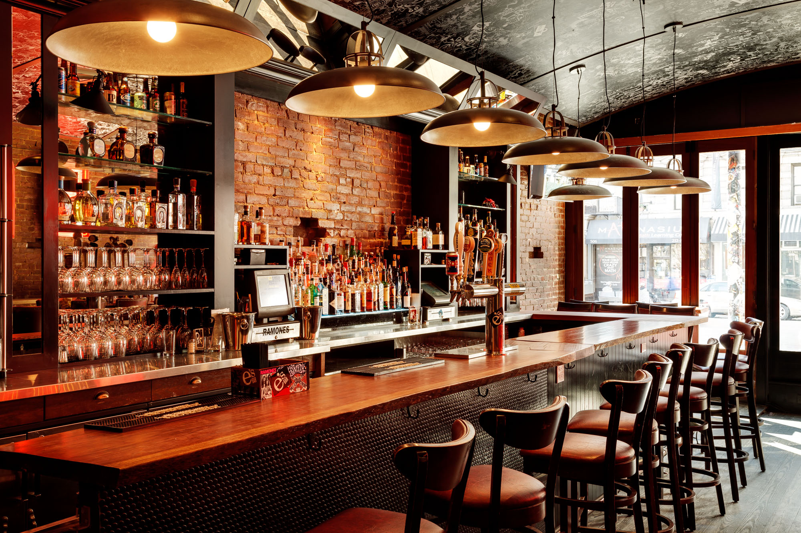
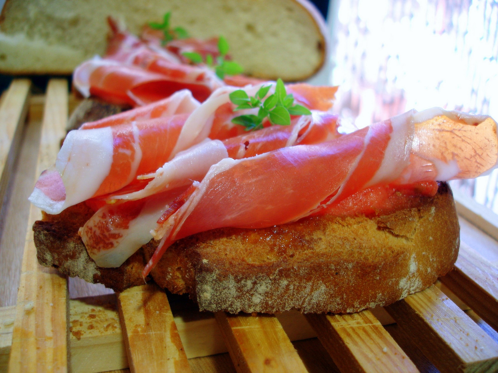
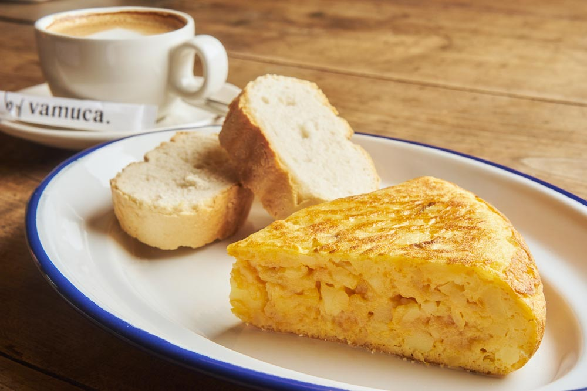
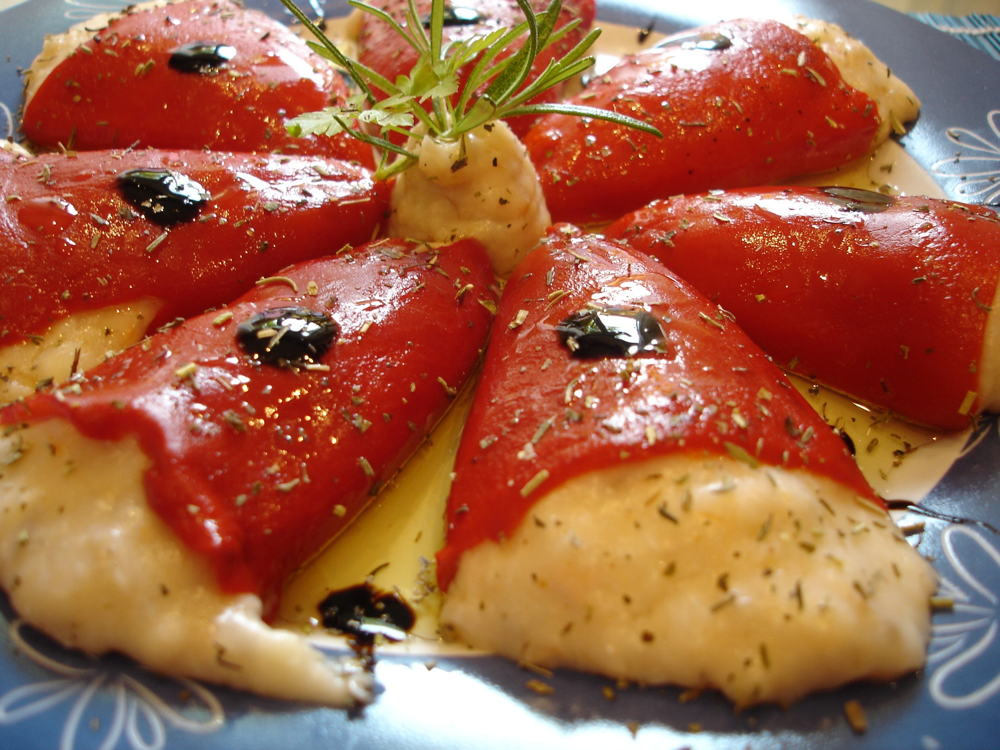

Sobre Nosotros
La Bodega de José: Sabor y Tradición en Cada Plato
En pleno corazón de España, te abrimos las puertas a un lugar donde la gastronomía española se vive con pasión. Tapas recién preparadas, recetas clásicas y productos de calidad se unen para ofrecerte una experiencia única, llena de autenticidad y buen gusto.
Acompaña tu comida con un vino selecto, una caña perfectamente servida o un café con aroma inconfundible mientras compartes charlas y risas en un entorno cercano y acogedor. Ya sea para un picoteo rápido, una comida en familia o una cena especial, siempre te recibirá la calidez que nos distingue.
Descubre en La Bodega de José el placer de la buena mesa y el ambiente que convierte cada visita en un recuerdo inolvidable.

Menú Destacado

Tapa de Jamón
Jamón ibérico de bellota, recién cortado para disfrutar su sabor único.

Tortilla Española
Clásica tortilla con patatas y cebolla, elaborada al estilo tradicional.

Pimientos del Piquillo
Pimientos rellenos de queso fresco, un contraste perfecto de sabores.